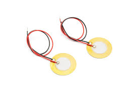
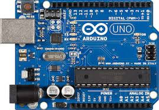

Ce projet n'a pas été réalisé dans le cadre du BTS, mais au lycée : c'était le chef-d'œuvre que je devais réaliser.
L'objectif était de concevoir une sorte de capteur sismique qui transférait, par l'intermédiaire de signaux électriques, les informations qu'il avait recueillies.
C'était très intéressant à réaliser puisque cela sortait partiellement de mon domaine de compétences. J'ai donc dû me documenter et faire des recherches complémentaires pour pouvoir le présenter au baccalauréat.
Je n'ai malheureusement pas pu le terminer, faute de matériel, mais cette activité a été l'une des plus intéressantes que j'aie pu réaliser jusqu'ici.

